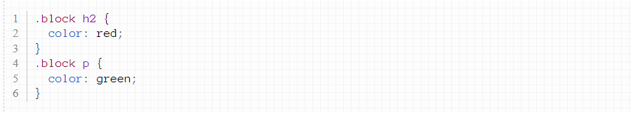

Пусть у нас есть два типа тегов с одинаковыми классами. Например, пусть и заголовки h2, и абзацы имеют один и тот же
класс:
Мы можем, к примеру, покрасить все элементы с таким классом в красный цвет:
Можно, однако, обратиться к конкретному тегу с классом. К примеру, можно выбрать все h2 с классом eee и отдельно выбрать
все p с этим классом.
Для этого в селекторе нужно написать имя тега, а затем слитно имя класса. Давайте, например, покрасим h2 с нашим классом
в красный цвет, а абзацы с таким классом - в зеленый:
.header {
color: red;
}
h2.header {
width: 40px;
}
h3.header {
width: 30px;
}
Пусть у нас есть следующий код:
text
text
Давайте выберем все заголовки h2 и абзацы, находящиеся внутри элемента с классом block, и покрасим их в разные цвета.
Используем для этого селектор потомков (который пробел между селекторами):

text
text
text italic
text italic
paragraph text bold italic
paragraph text italic
Пусть у нас есть следующий код:
Пусть мы хотим выбрать все теги i, являющиеся потомками абзацев. Сделаем это:
text bold italic
text just italic
Давайте теперь выберем те теги i, которые являются непосредственными потомками наших абзацев. В этом нам поможет
дочерний селектор .
Чтобы понять, как им пользоваться, давайте сравним его с селектором потомков. Вот так: p i - мы выберем все курсивы
внутри абзацев, а вот так: p i - только курсивы, являющиеся непосредственными потомками абзацев.
Давайте применим этот селектор к нашему HTML коду:
text bold italic
text just italic